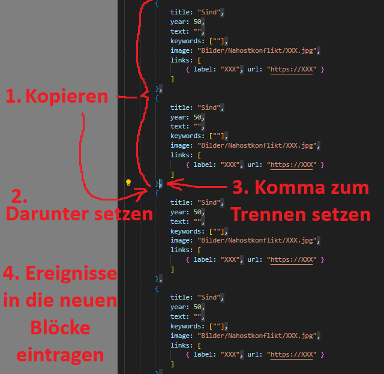

Auf dieser Seite wird dir Schritt für Schritt erklärt, wie du deinen eigenen interaktiven Zeitstrahl erstellen kannst.
Keine Sorge - du brauchst keine Programmierkenntnisse. Lies einfach die Anleitung in Ruhe durch und folge den Schritten. Es ist empfehlenswert, mit einem PC oder Laptop zu arbeiten.
Lade dir ein Programm zur Bearbeitung von Code, wie Visual Studio Code (kurz: VS Code), herunter und installiere es auf deinem Computer.
Du kannst auch ein anderes Programm zur Dateibearbeitung verwenden, doch das Gesehene wird dann wahrscheinlich nicht mehr den Anleitungsbildern entsprechen.
Öffne den Ordner "JS", in dem alle Dateien des Zeitstrahl-Projekts liegen.
Klicke mit der rechten Maustaste auf die Datei timeline-data-WeitererZeitstrahl.js und öffne sie in Visual Studio Code.
Wähle durch STRG/CTRL + A alles aus und kopiere es durch STRG/CTRL + C.
Erstelle nun durch Rechtsklick in die obere Leiste in Visual Studio Code (dort wo auch der Name der gerade geöffneten Datei steht) eine neue Datei und füge den kopierten Code durch STRG/CTRL + V ein.
Speichere diese neue Datei nun unter einem neuen Namen, indem du auf "Datei" und dann auf "Speichern als" klickst. Gebe nun timeline-data-WeitererZeitstrahl.js, wobei du "WeitererZeitstrahl" mit dem Thema deines Zeitstrahls ersetzts, ein und klicke auf "Speichern".
Beispiel: timeline-data-nahostkonflikt.js.
Gehe im Ordner des Zeitstrahl-Projekts auf den Ordner Bilder und lege dort einen neuen Ordner mit dem Namen deines Themas an. Verschiebe alle Bilder, die du im Zeitstrahl nutzen möchtest, in diesen Ordner.
Beispiel: Bilder/Nahostkonflikt/.
Öffne deine Datei timeline-data-XXX.js aus Schritt 2 in Visual Studio Code. Sie soll dir als füllbare Vorlage für deinen eigenen Zeitstrahl dienen.
Du kannst nun anpassen oder neue Einträge hinzufügen:
"Bilder/Nahostkonflikt/fabrik.jpg" zu dem Bild, das im Infokasten angezeigt werden soll.links: [{ label: "Wikipedia-Artikel", url: "https://de.wikipedia.org/wiki/Geschichte_der_Russlanddeutschen" }] zu dem Wikipedia-Artikel "Geschichte der Russlanddeutschen" weitergeleitet werden.In der Vorlage sind nur ein paar Beispiele eingetragen. Um mehr Ereignisse einzutragen, kopiere mit STRG/CTRL + C einfach die vorhandenen Blöcke und füge sie durch STRG/CTRL + V genau unter den kopierten Blöcken ein. Achte dabei auch auf die Kommasetzung, die der der anderen Blöcke entsprechen sollte.

Öffne ALLE HTML-Dateien, die sich im Zeitstrahl-Projekt-Ordner befinden, durch Rechtsklick, in Visual Studio Code.
Suche oben den Menübereich, wo die Zeitstrahle aufgelistet sind.
Füge in allen HTML-Dateien an dieser Stelle einen neuen Link zu deinem Zeitstrahl ein, z.B.:
<a href="index.html?dataset=nahostkonflikt">Der Nahostkonflikt</a>Jede Information und jedes Bild braucht eine ordentliche Quelle.
Prüfe außerdem, ob die Quelle vertrauenswürdig ist, bevor du sie verwendest:
Universitäten, Museen, wissenschaftliche Artikel = gut.
Anonyme Blogs ohne Nachweise = vorsichtig sein.
Dein eigener Zeitstrahl sollte nun erstellt sein.
Öffne die timeline.html im Browser und wähle im Menü dein Thema aus.
Wenn etwas nicht stimmt, schaue noch einmal über deinen Code. Im Notfall kannst du mich auch für Hilfe anschreiben.
Viel Erfolg!